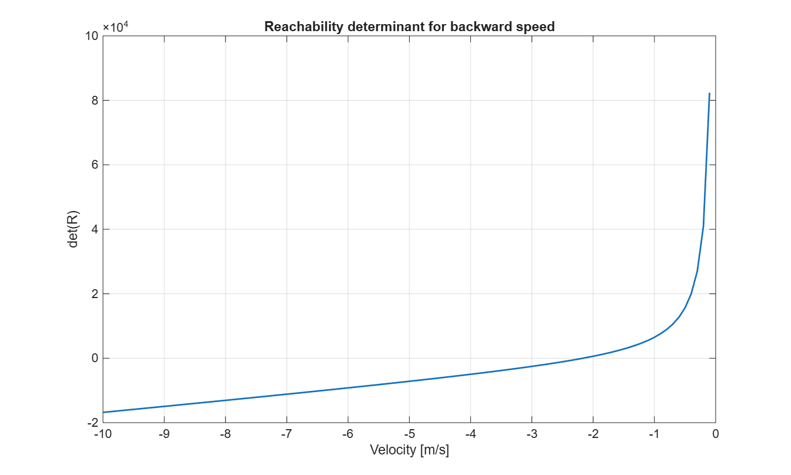
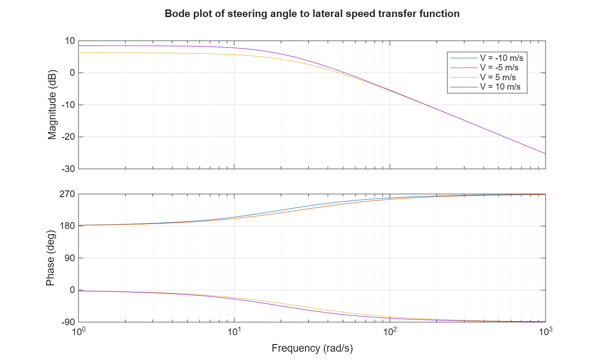
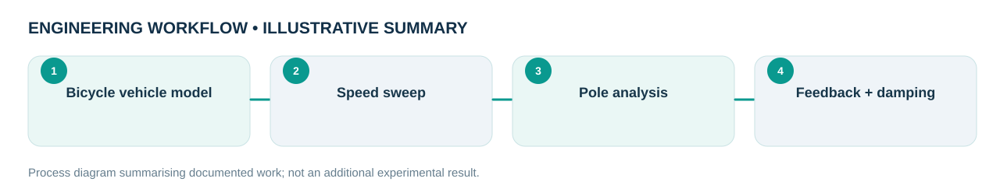

Engineering problem
How do vehicle forward speed and model parameters change lateral stability and steering-response behavior?
Analysed a BMW 730 bicycle-model representation to understand speed-dependent lateral dynamics, controllability, observability, damping and steering response.
My role and technical ownership
I analysed the specified BMW 730 bicycle-model problem, assessed dynamic properties and implemented feedback studies in MATLAB.
How I approached the work
- Computed speed-dependent poles/eigenvalues and transfer-function responses for the academic lateral vehicle model.
- Studied controllability, observability and understeer/oversteer tendencies.
- Analysed the influence of feedback design on damping and transient response.
What the evidence shows
The report shows a selected damping-ratio change from roughly 0.088 to 0.628 under its model and controller assumptions.
Design files, models & results
Original CAD screenshots, simulation plots or project photographs are shown wherever they were available. Select a figure to open the larger file. Workflow graphics are clearly labelled as illustrative.



Limitations and engineering learning
Based on an academic vehicle model, not measurement of a production BMW vehicle.
Engineering takeaway: BMW appears as the reference vehicle in an academic model; this is not BMW production-system engineering or measurements.